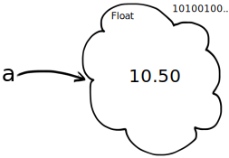
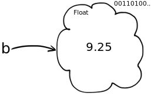
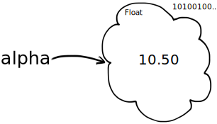

Introduction to variables¶
Remember the problem in the first notebook.
Alex and Billie are at a restaurant, getting ready to order. They don’t have much money, so they are calculating their expected bill before they order.
Alex is thinking of having the fish for £10.50, and Billie is leaning towards the chicken, at £9.25. They also want to add a tip of 15%.
Here’s the calculation for the tip.
# The bill plus tip - mistake fixed.
(10.50 + 9.25) * 0.15
2.9625
We then had to add this to the total before tip, to get the grand total:
# The bill, including the tip
10.50 + 9.25 + (10.50 + 9.25) * 0.15
22.7125
But - what if Alex changes her mind, and wants to have the aubergine gratin, for £8.95? We have to type the whole calculation out again, but change the previous £10.50 (the fish) to the current £8.95 (the aubergine), like this:
# The bill, including the tip, with Alex having aubergine.
8.95 + 9.25 + (8.95 + 9.25) * 0.15
20.93
We would like a way to give labels to these numbers, to make our calculations easier to read, and easier to repeat.
We need variables.
An interlude - thinking like the computer.¶
Remember when we calculated the total bill before tip:
# Total bill, before tip.
10.50 + 9.25
19.75
To recap, when you run this code (by typing Shift-Enter) Python makes its own
representation of 10.50:

It also makes its own representation of 9.25:

Python then runs the addition operation on these two, which results in
Python’s representation of 19.75.

Finally, Python sends back the 19.75. The notebook detects that Python sent
back a value, and shows it to us.
Enter - variables!¶
Now consider this:
a = 10.50
b = 9.25
a + b
19.75
The first two lines in the cell above are assignment statements.
Let’s consider the first line.
a = 10.50
Like all assignment statements, this assignment statement has two parts, and these are (wait for it):
The left hand side (to the left of the equals sign
=).The right hand side (to the right of the equals sign
=).
In our case:
The Left Hand Side (LHS) is
a.The Right Hand Side (RHS) is
10.50.
What will Python do with this line?
First it works on the RHS, and does what it did before; it makes its own
representation of 10.50. This thing that it made is a value. (We could
also call it an object, but don’t worry about that for now).
Next it looks at the LHS, and sees a. It realizes that this is a name that we want to give the new value. Then it stores the new value 10.50 with the label a, in its workspace. Next time we use the label a Python will look in its workspace for the label a, it will find 10.50, and return it to us.

You can read a = 10.50 as:
‘a’ gets the value 10.50
Here we just run the same line again, but with a comment to remind us what is happening:
# 'a' gets the value 10.50
a = 10.50
Let’s use the new label a by putting it on a line on its own, in a code cell.
# Show the value of "a"
a
10.5
What happened here?
Remember that, when Python sees the label a it will look in its workspace for a. If it finds a, it will return the value for a. This is 10.50. Finally, Jupyter makes the value 10.50 into something it can print to show us, and we see 10.50.
Now we go back to the original three lines. Run this cell:
# Set 'a' and 'b', then show the result of adding 'a' and 'b'.
a = 10.50
b = 9.25
a + b
19.75
We read the first two lines as:
‘a’ gets the value 10.50.
‘b’ gets the value 9.25.
Calculate ‘a + b’ and show the result.
The second line tells Python that is should give the label b to the value 9.25.

What is happening in the third line a + b?
Python sees a, and replaces it with the value for a: its own representation of the number 10.50.
Then it sees b and replaces it with the value for b: its own representation of the number 9.25.
Noting the + it then calculates the result of adding the value 10.50 to the value 9.25, and this generates a new value, 19.75.
Finally, it makes something we can show on the screen for this value, 19.75, and shows it to us: 19.75.
So a + b ends up with exactly the same calculation, and result, as 10.50 + 9.25.
Using variables¶
a and b above are variables. Variables are labels attached to values.
Here we have used single-letter names for the variables, but we can use
multiple letters in the names. We can even use the underscore character _
in the name. Python doesn’t care whether the names are single letters, or
multiple letters, it just uses the name as a label to refer to the value. So
we could write the same calculations like this:
# Different, longer names.
alpha = 10.50
beta = 9.25
alpha + beta
19.75
All this does exactly the same as the cell with the names a and b, except now the label we use for 10.50 is alpha and the label for 9.25 is beta. For example, now the label alpha points to the value 10.50:

You will find it very useful to use good variable names. A good variable name is a name that reminds you what the value represents. For example, we could write this:
# Better variable names
alex_main = 10.50
billie_main = 9.25
alex_main + billie_main
19.75
Here the names remind us what the values mean. Python doesn’t care though - it just sees a label, it doesn’t try and work out what the label means. We choose good variable names for us, the people reading the program. Python doesn’t care either way.
Finally, we might also put the total into its own variable, like this:
# Total gets its own variable.
alex_main = 10.50
billie_main = 9.25
total = alex_main + billie_main
# Show the value attached to the 'total' variable.
total
19.75
Again, the name total is a good one, because it reminds us what the value means, but it is nothing special to Python - we could have called it bandersnatch and we would get the same result:
# Total variable, with funny name.
alex_main = 10.50
billie_main = 9.25
bandersnatch = alex_main + billie_main
# Show the value attached to the 'bandersnatch' variable.
bandersnatch
19.75
Putting the total in its own variable allows us to do our original calculation of the bill plus tip in a rather simple and readable way:
# The bill plus tip, again.
total + total * 0.15
22.7125
It also means that we can change our minds about the individual amounts, but still keep the same bit of code. Here’s the calculation of the total and tip, again.
# Calculate total and total plus tip, again.
total = alex_main + billie_main
# Calculate and show the result.
total + total * 0.15
22.7125
Now Alex has changed her mind, all we need to do is change her variable:
# Alex wants the aubergine gratin.
alex_main = 8.95
Now re-run the cell above - what do you see?
End note¶
Variables are the heart of coding. By using good variable names, we can write
down our calculations in a way that is easy to understand. We can make
calculations more general, and therefore more useful, but using variables
instead of values like 10.50, so that the calculation works for any valid
number, that we put into the variable.